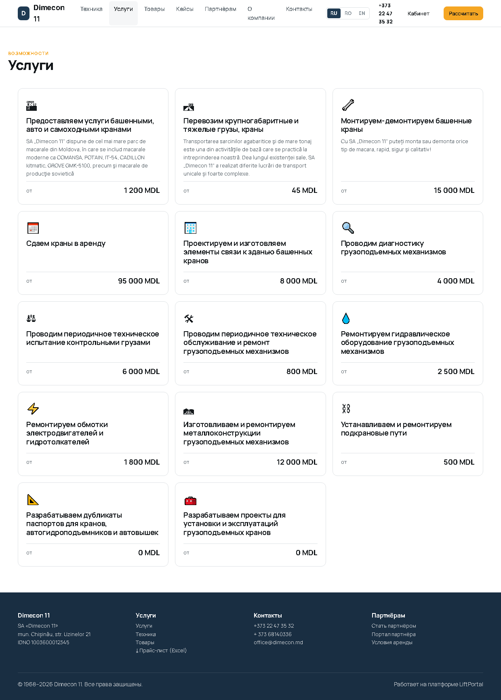
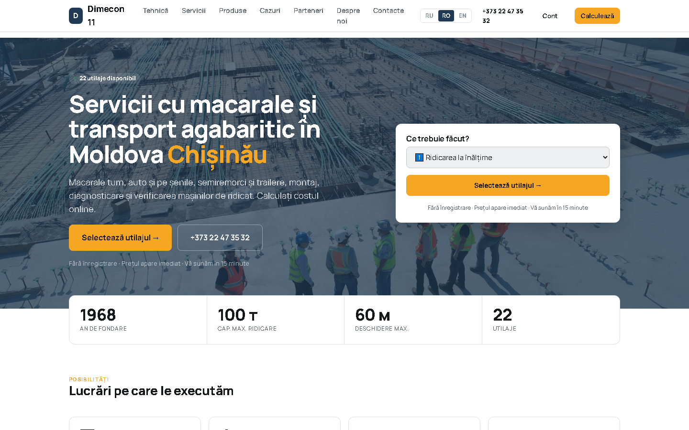
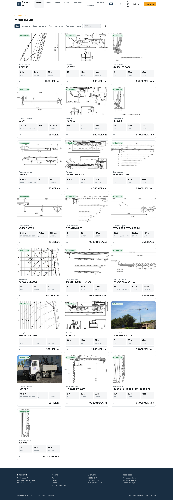
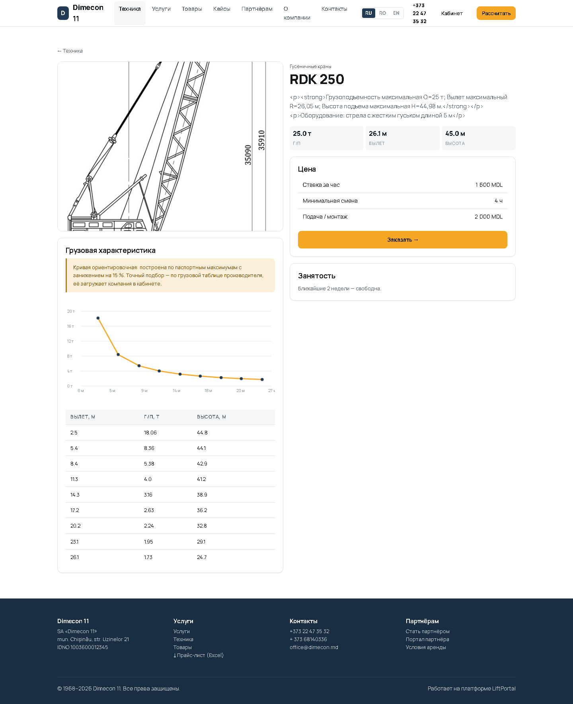
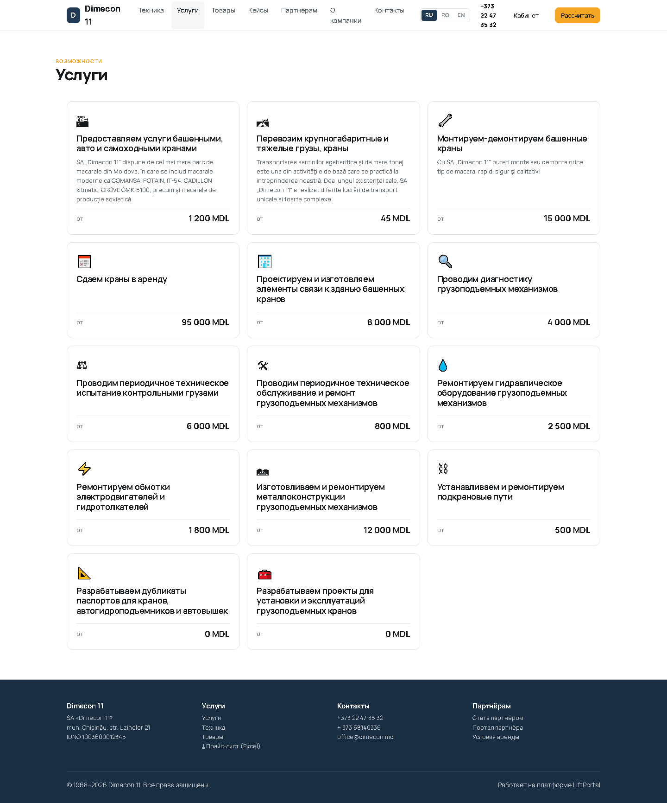
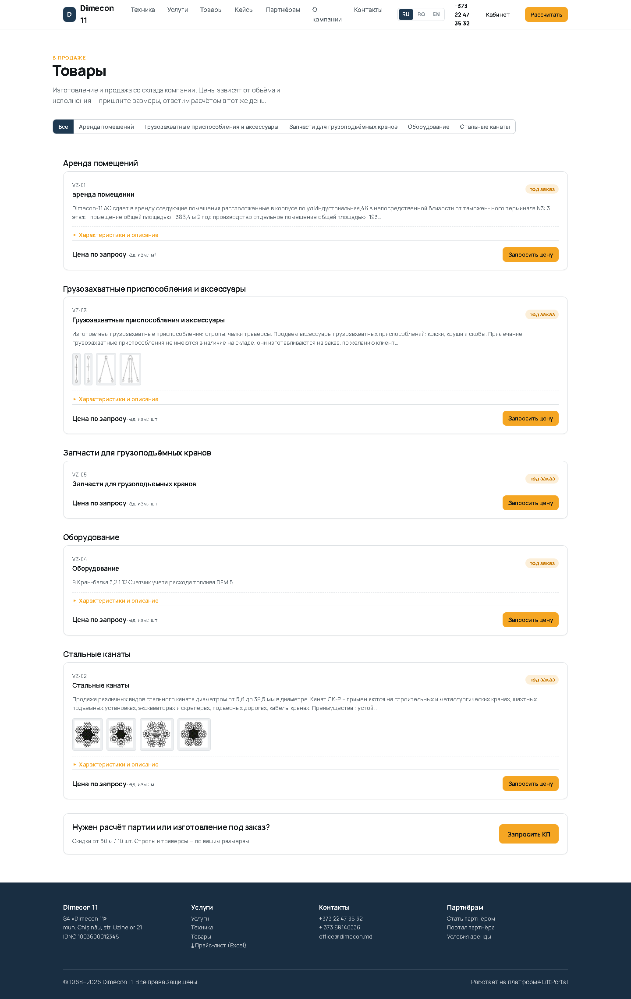
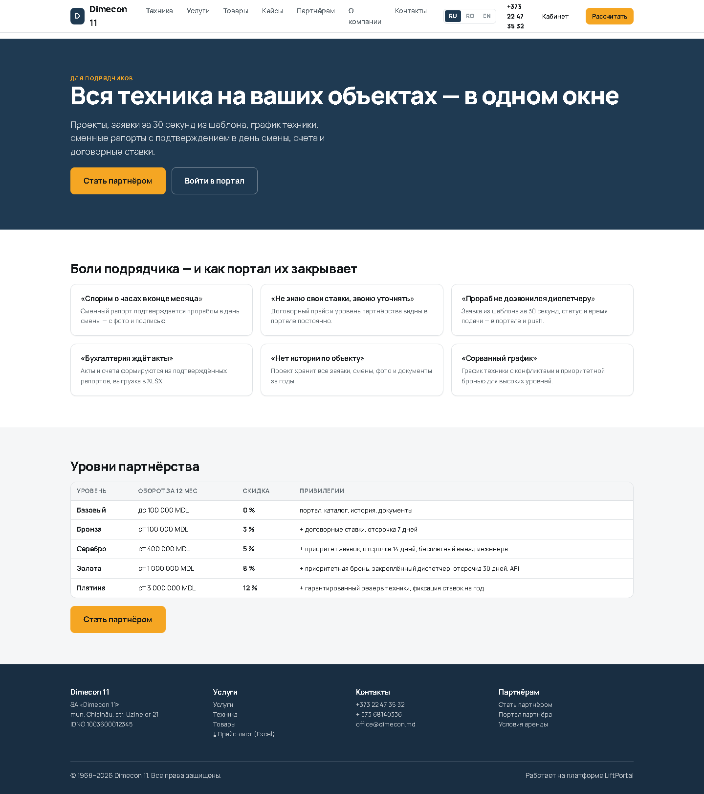
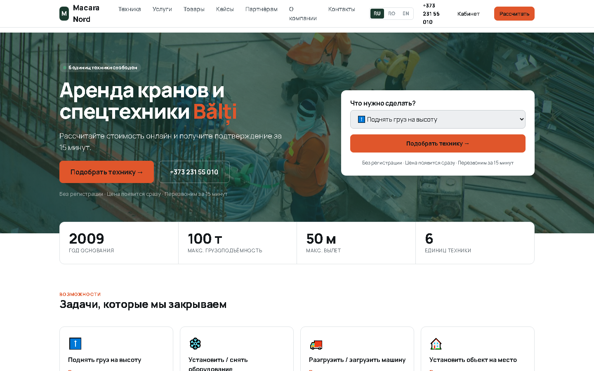
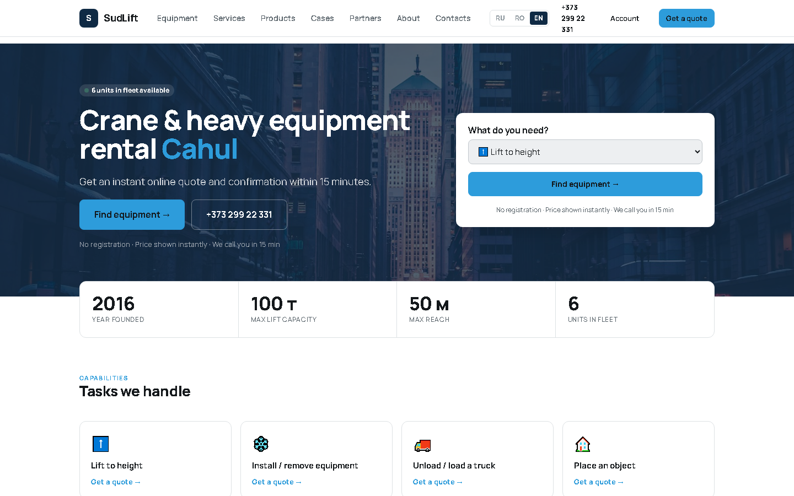
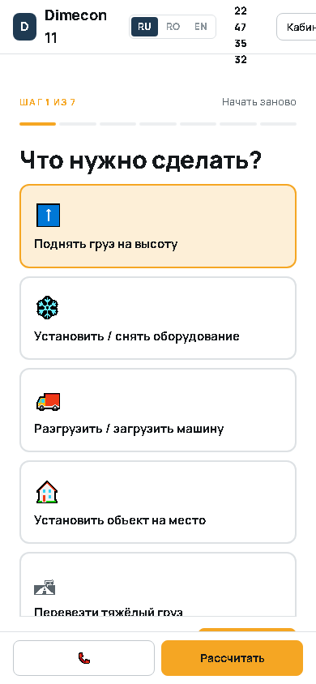

16 / 16проверок пройдено
67 / 67адресов отвечают
14снимков экрана
0не пройдено
Годен
Что проверялось
- выгрузка разделов исходного сайта на трёх языках
- перенос парка техники, услуг, товаров, страниц и фотографий
- объединение расходящихся языковых версий каталога
- работа публичных страниц трёх компаний и переключение языков
Результаты
1. РАЗМЕТКА ИЗ ИСТОЧНИКА СОХРАНЯЕТСЯ
| Результат | Проверка | Фактически |
|---|---|---|
| ✔ OK | абзацы и выделение выводятся разметкой | <p>, <strong> |
| ✔ OK | таблица характеристик открывается | тег <table> восстановлен |
| ✔ OK | строки и ячейки таблицы на месте | 2 строки, 4 ячейки |
| ✔ OK | таблице возвращён служебный класс оформления | |
| ✔ OK | экранированных тегов в выводе не осталось |
2. ОПАСНАЯ РАЗМЕТКА ОБЕЗВРЕЖИВАЕТСЯ
| Результат | Проверка | Фактически |
|---|---|---|
| ✔ OK | скрипт не выводится тегом | в выводе нет «<script» |
| ✔ OK | картинка с обработчиком не выводится | в выводе нет «<img» |
| ✔ OK | ссылка с javascript: не выводится | в выводе нет «<a» |
| ✔ OK | обработчик события у разрешённого тега отброшен | в выводе нет «onclick» |
| ✔ OK | встроенный фрейм не выводится | в выводе нет «<iframe» |
| ✔ OK | обработчик у таблицы отброшен | в выводе нет «onmouseover» |
| ✔ OK | разрешённый тег с опасным атрибутом остаётся тегом | атрибут убран, абзац сохранён |
3. ТЕКСТ БЕЗ РАЗМЕТКИ
| Результат | Проверка | Фактически |
|---|---|---|
| ✔ OK | plain убирает теги | Стальные канаты Диаметр, мм Масса, кг/м |
| ✔ OK | plain обрезает по длине с многоточием | Стальные канаты Диам… |
| ✔ OK | поле i18n берётся по основному языку | |
| ✔ OK | пустое значение не ломает вывод |
Контрольные показатели переноса
| Сценарий | Ожидание | Факт |
|---|---|---|
| Единиц техники перенесено | весь парк исходного сайта | 22 из 22 |
| Названия техники на трёх языках | 22 / 22 / 22 | ru 22, ro 22, en 22 |
| Фотографии техники | у каждой карточки | без фотографии — 0, всего 57 файлов |
| Услуги | 14 | 14 |
| Товары, страницы, кейсы | перенесены | 5 товаров, 3 страницы, 2 кейса |
| Контакты и год основания | как на сайте | +373 22 47 35 32, office@dimecon.md, 1968 |
| Технические характеристики | по данным источника | нет у 2 машин — GROVE GMK 2035 и GMK 3055 |
| Товары: соответствие языковых версий | карточка совпадает по смыслу, а не по позиции | 5 карточек сопоставлены по названию; у «аренды помещений» английской версии на сайте нет |
| Товары: описание и таблицы | выводятся разметкой, а не кодом | 3 таблицы характеристик, 0 экранированных тегов |
| Товары: фотографии | не растягивать значки 86×92 | мелкие изображения показаны миниатюрами |
ПЕРЕНЕСЕНО С dimecon.md
техника ................ 22 строк грузовых таблиц .. 126 (ориентировочные, конфигурация 'approx') услуги ................. 14 товары ................. 5 страницы ............... 3 кейсы .................. 2 файлы в медиатеке ...... 57 контакты ............... +373 22 47 35 32 / + 373 68140336 / office@dimecon.md, основана 1968
ПО КАТЕГОРИЯМ
Гусеничные краны 1: RDK 250 Автокраны 6: GROVE GMK 2035, GROVE GMK 3055, GROVE GMK 5100, KC-6471, КС-3577, КС-4562 Транспорт и тралы 6: 3PT 40-206, 3PT 40-206M, 555-102, A-441, CMZAP 93853, FAYMONVILLE SNT-4U, SJ-45S Башенные краны 9: COMANSA 10LC 140, Irmaos Tavares IT-54 5fd, КБ-308, КБ-308А, КБ-309ХЛ, КБ-403А, КБ-403Б, КБ-405-1А, КБ-405-1АМ, КБ-405-2А, КБ-408, POTAIN MC-85B, POTAIN MCT-88
ПОЛНОТА ДАННЫХ
без ТТХ на сайте-источнике: 2 — GROVE GMK 2035, GROVE GMK 3055 без фотографии ...........: 0 названий на «ru» ........: 22 из 22 названий на «ro» ........: 22 из 22 названий на «en» ........: 22 из 22
РАССИНХРОН ЯЗЫКОВ НА ИСХОДНОМ САЙТЕ (карточек в разделе)
auto RU= 3 RO= 5 EN= 4 <-- расходится turn RU= 9 RO= 9 EN= 9 senile RU= 1 RO= 1 EN= 1 transport RU= 6 RO= 6 EN= 6 servicii RU=14 RO=14 EN=14 vinzari RU= 5 RO= 5 EN= 4 <-- расходится noutati RU= 0 RO= 0 EN= 0
Проверенные адреса
| Код | Адрес |
|---|---|
| 200 | /s/dimecon/ |
| 200 | /s/dimecon/equipment |
| 200 | /s/dimecon/equipment/ks-3577 |
| 200 | /s/dimecon/services |
| 200 | /s/dimecon/services/predostavlyaem-uslugi-bashennymi-avto-i-samohodnymi-kranami-1 |
| 200 | /s/dimecon/products |
| 200 | /s/dimecon/cases |
| 200 | /s/dimecon/about |
| 200 | /s/dimecon/contacts |
| 200 | /s/dimecon/p/terms |
| 200 | /s/dimecon/calculator |
| 200 | /s/macara-nord/ |
| 200 | /s/sudlift/?lang=ro |
| 200 | /s/sudlift/equipment?lang=en |
| 200 | /s/dimecon/track/DIM-2026-00069 |
Снимки экрана














Выводы
- 22 единицы техники, 14 услуг, 5 товарных позиций, 3 страницы, 57 фотографий
- языковые версии исходного сайта расходятся: 3 автокрана в русской против 22 единиц фактически
- перенос объединил версии по модели — весь парк доступен на всех трёх языках
Ограничения испытаний.
- У GROVE GMK 3055 и GMK 2035 на исходном сайте нет технических характеристик — карточки перенесены, характеристики показаны как «—», в подборе не участвуют.
- Грузовые таблицы производителя на сайте отсутствуют: построены ориентировочные кривые с занижением 15 % и явным предупреждением на карточке.
Акт сформирован автоматически 20.09.2026 02:20 по протоколам прогонов в
docs/*.log.
Испытания провёл: Claude (Claude Code), автоматизированный прогон.